Terence: The Interactive Angry Birds-Playing Robot
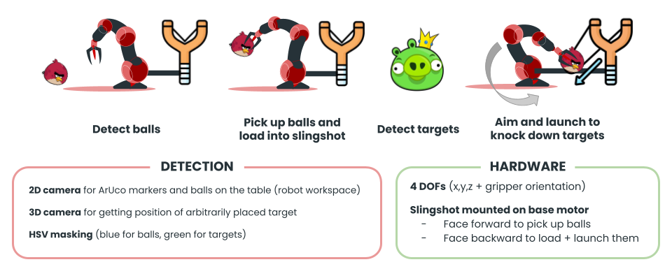
Objectives
Build a robot that autonomously plays a real-life version of Angry Birds — detecting colored balls and 3D-printed pig targets, then using a slingshot to knock them down while dynamically adapting to human interference in real time.
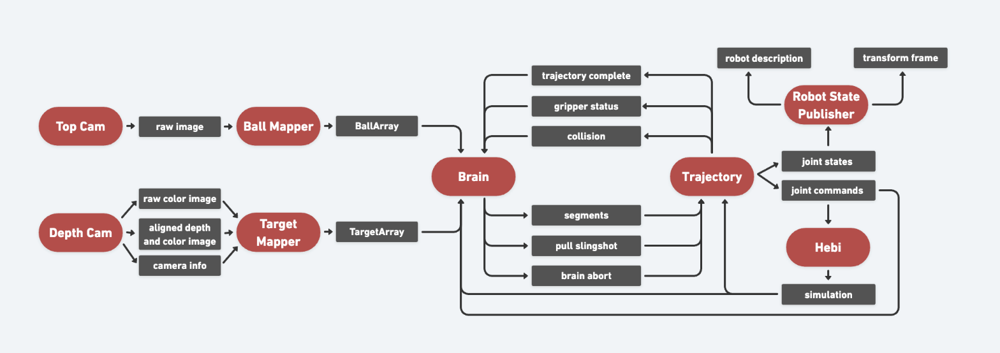
Methods
A 4-DOF HEBI arm with a slingshot mounted on its base motor using a network of ROS nodes to manage computer vision (HSV masking for object detection using a 2D and a 3D/depth camera), damped Newton–Raphson inverse kinematics, spline trajectory generation, continuous collision and gripper detection, and decision-making for robust human interaction.
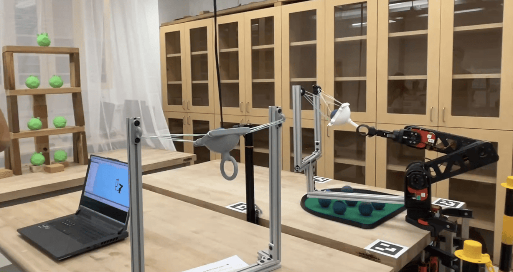
Results
The robot successfully completed full autonomous cycles — picking up balls, loading the slingshot, aiming at targets, and launching — while correctly handling human interventions such as added/removed balls, knocked-down targets, and physical contact with the arm.
Fixed-Wing Aircraft Path Planner
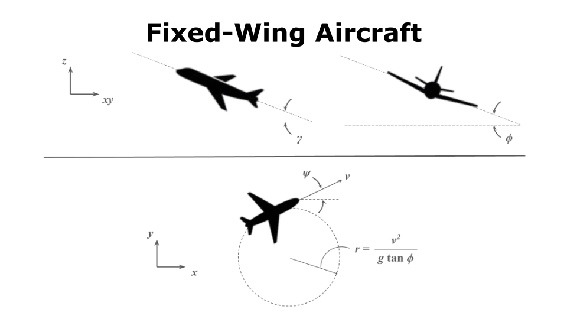
Objectives
Develop a motion planner for a fixed-wing aircraft that generates smooth, flyable paths through pre-mapped obstacle-dense urban environments while respecting the vehicle's dynamic constraints.
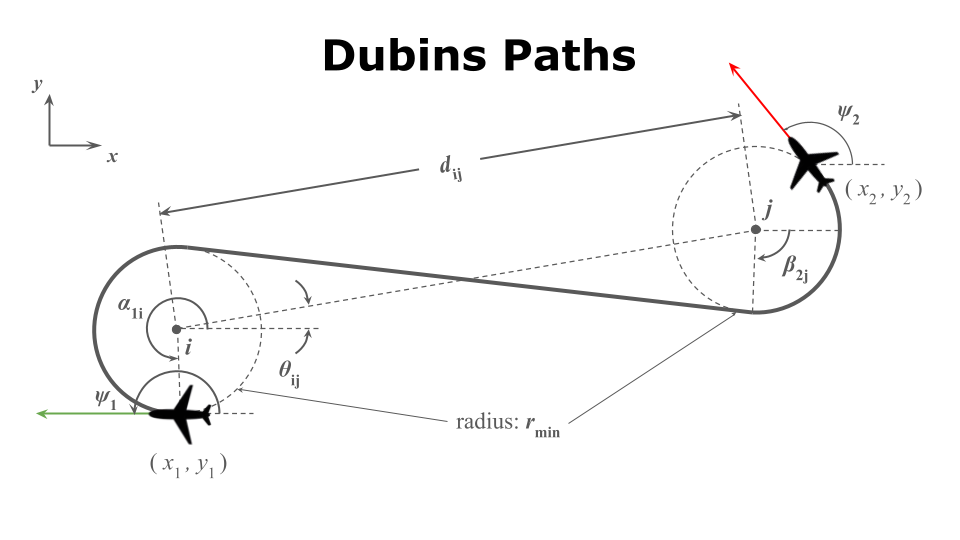
Methods
Implemented an RRT planner using Dubins paths as the local steering primitive and enforcing max climb/descent angles enforced along the paths. This ensures every generated path segment is kinematically feasible for a fixed-wing aircraft. Post-processing then iterates over the raw RRT output to remove unecessary intermediate nodes.
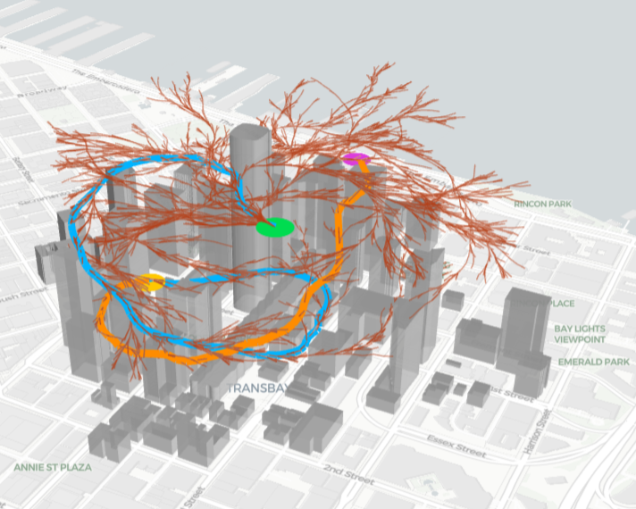
Results
The planner reliably found collision-free, curvature-constrained paths through cluttered environments, with post-processing significantly reducing path length while preserving flyability.
Engineering Analysis Reports
Finite element analyses of aluminum structures in Ansys — exploring tensile failure, mesh convergence, stress concentration, elastic–plastic deformation, modal vibration, and transient structural dynamics.
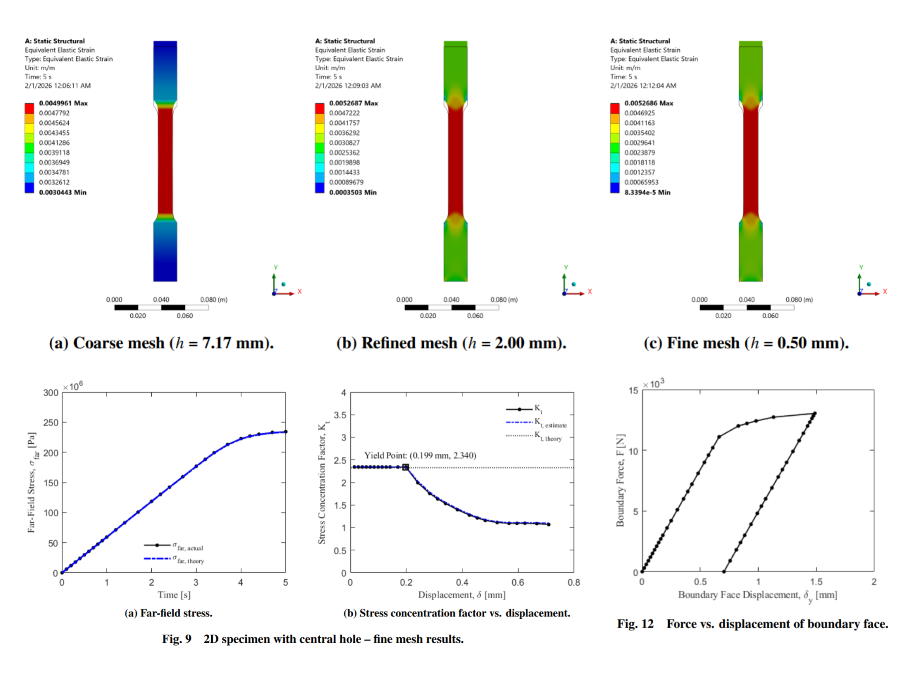
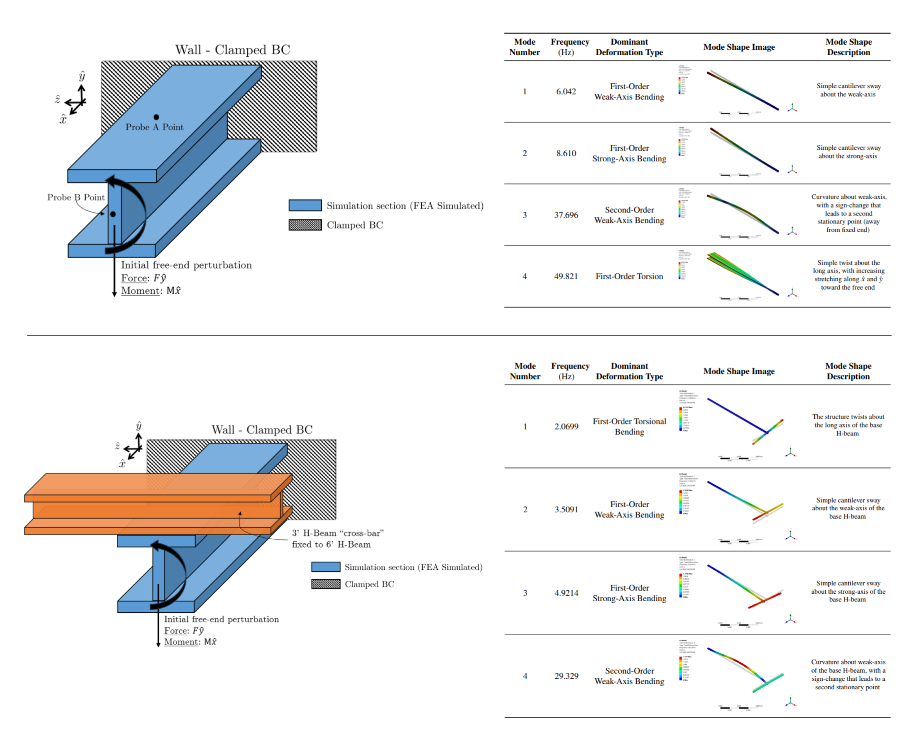
OrbitNav: CubeSat Attitude Determination & Control Module
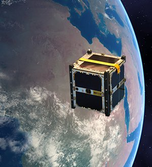
Objectives
Design a plug-and-play ADCS module for 3U–6U CubeSats that works with any configuration of actuators and sensors while minimizing the parameters end-users need to configure.
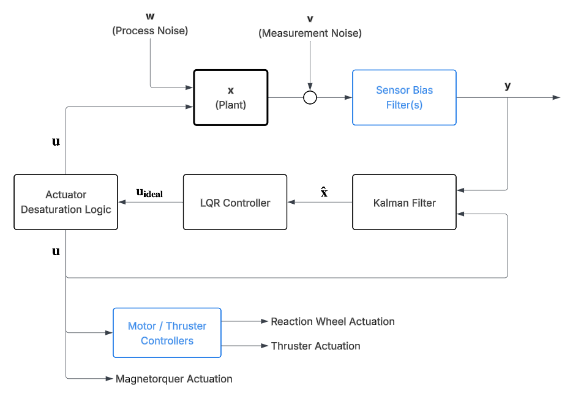
Methods
A Kalman Filter fuses noisy sensor measurements with a linearized state-space dynamics model for optimal state estimation, while an LQR controller minimizes a quadratic cost balancing pointing accuracy against actuator effort across reaction wheels, thrusters, and magnetorquers based on a minimal set of user-input actuator weights/costs.
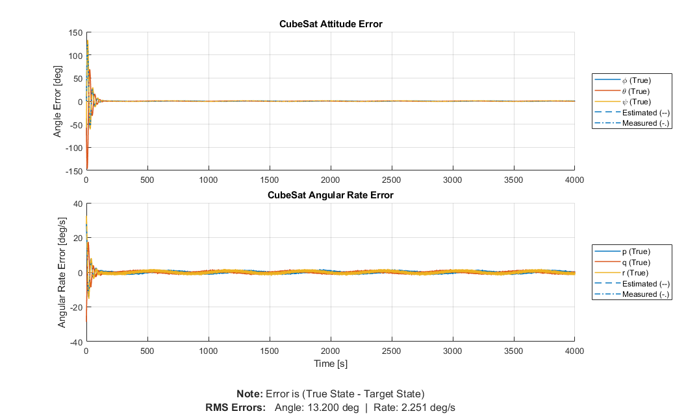
Results
Simulation showed the OrbitNav module achieved an ~90% reduction in RMS attitude error versus a baseline PID controller (1.435° vs. 13.200°), while also drastically reducing actuator saturation through LQR cost tuning.
Bot Dylan: The Guitar-Playing Robot
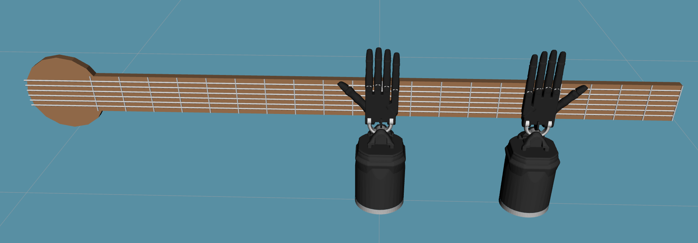
Objectives
Model a bimanual robotic system using the Shadow Robot Dextrous Hands capable of playing guitar chords — coordinating a fretting hand to press strings on the fretboard and a strumming hand to sweep across the strings simultaneously.
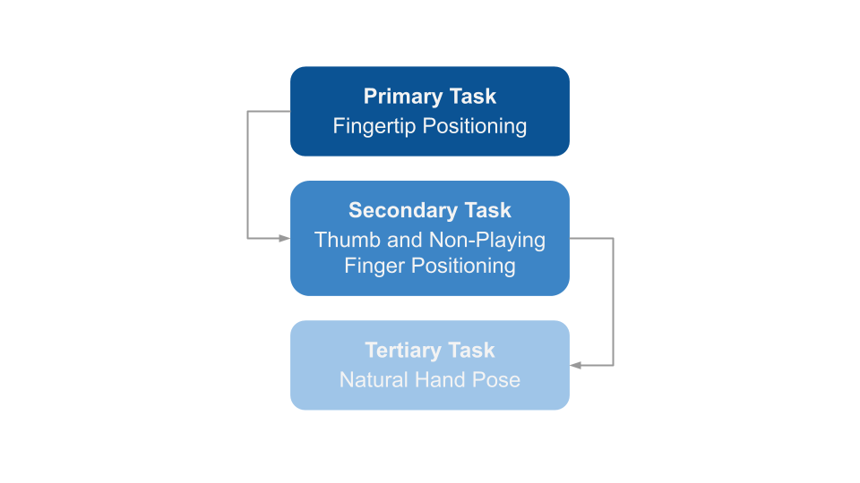
Methods
A 45-DOF kinematic system was controlled through prioritized multi-task inverse kinematics — a primary task for fingertip positions, a secondary null-space task for thumb placement and finger clearance, and a tertiary task to maintain a natural hand pose — with weighted inverses to handle singularities.
Results
The system successfully played chord progressions with coordinated fretting and strumming motions, achieving precise fingertip placement on target strings while maintaining natural-looking hand poses throughout.
Sumo Hockey Robot
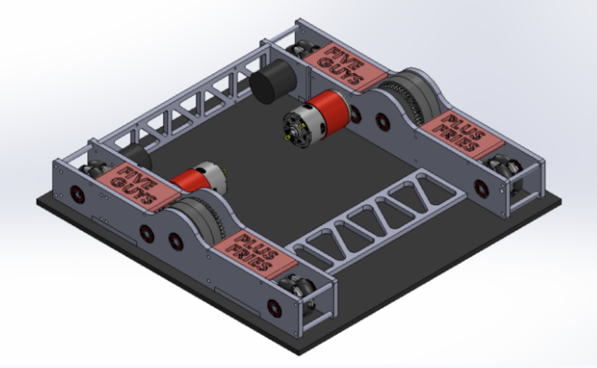
Objectives
Develop a high-performance mobile robot for a "Sumo Hockey" competition, prioritizing power, robustness, and agile maneuverability to win pushing contests and maintain puck control.
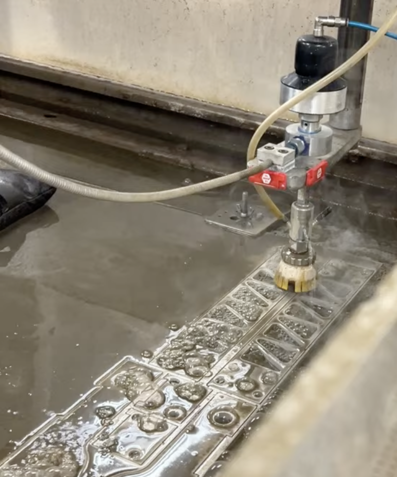
Methods
Designed a cost-effective agile tank-drive using 2 motors to drive central high-traction wheels and idle outer omniwheels, with magnets to increase traction. Developed a two-stage, waterjet + milling, manufacturing process to quickly and reproducibly fabricate an aluminum frame.
Results
Achieved a fully functional chassis that successfully demonstrated high speed and maneuverability during mobility trials.
Two-Speed Transmission
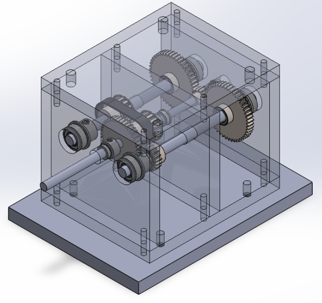
Objectives
Design and manufacture a robust transmission system for a class competition where the score was determined by dividing the transmission highest (steady-state) RPM by the time it took to reach 250 RPM.
Methods
Implemented a two-stage transmission mechanism using one-way bearings and an H-bridge to switch the polarity of the motor mid-operation to optimize both initial torque and steady-state velocity. Utilized manual machining (lathe and mill) to customize small quantities of off-the-shelf shafts and gears.
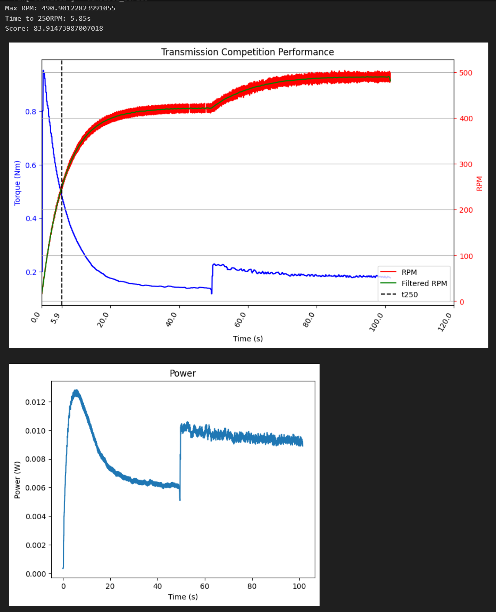
Results
The transmission successfully shifting between high-torque and high-speed modes during the class competition, culminating in a first-place finish.